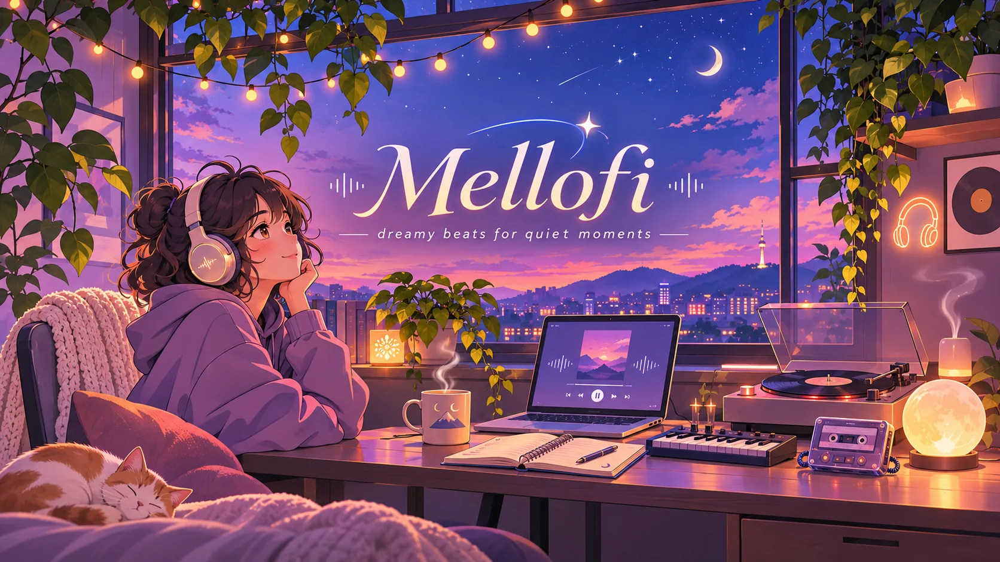

01 / FOCUS
soft mornings
For finding your flow.
Warm melodies, hazy sunsets, and a space where time moves just a little slower. Welcome to Mellofi.
Soundscapes to keep you company, wherever your mind wanders.
Some songs feel like a place you’ve never been but somehow miss. A little warmth, a little nostalgia, and plenty of room to breathe.
To preview music here, select your own audio file in the player below.
There's no perfect time to pause. Just press play and let the world get softer.
For finding your flow.

For wandering minds.
For letting the day go.
Mellofi is a little home for dreamy instrumentals, cozy textures, and the kind of melodies that make ordinary moments feel cinematic.
Whether you're studying, taking the scenic route home, or doing absolutely nothing — you belong here.
Take the mellow wherever you go. Listen, drift, and come back whenever you need a little calm.
Links can be updated inscript.js.